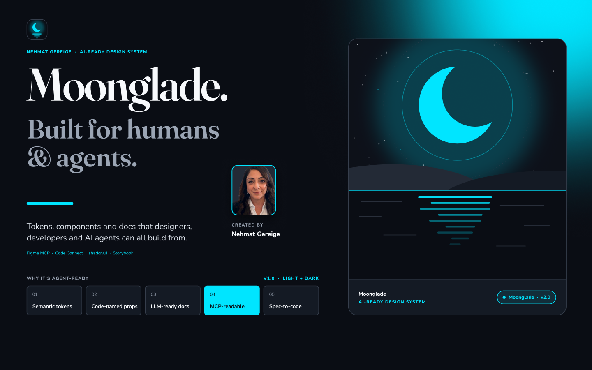
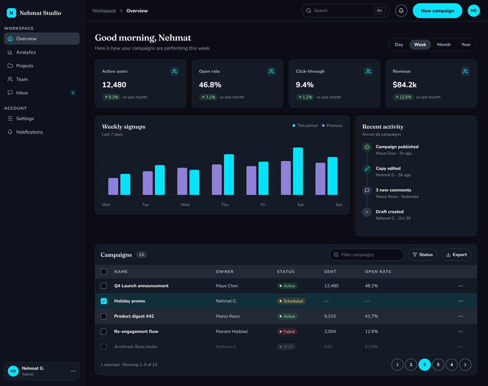
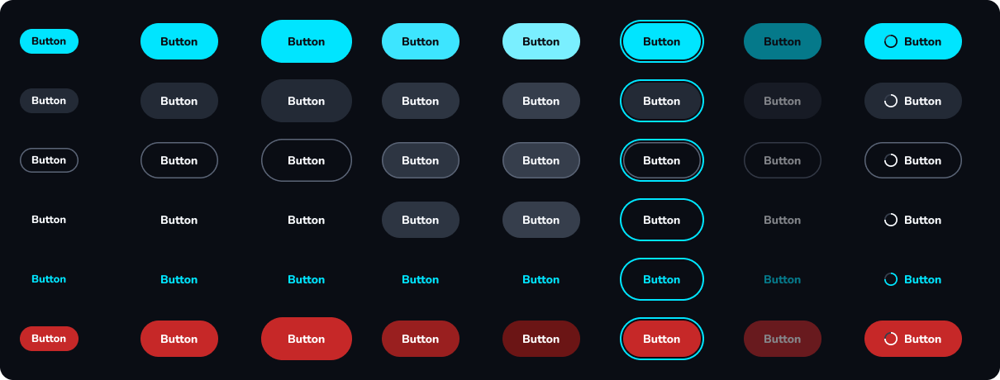

DESIGN SYSTEMS · MOONGLADE
From Figma library to agent-ready React design system.
I built Moonglade to explore what it takes for designers, developers, and AI agents to build with the same design system. I started with the foundations in Figma, turned them into a reusable React library, and recorded the workflow so other designers could follow it.

FIGMA FOUNDATIONS
Start with tokens and test them in a real layout.
I set up color, typography, spacing, and radius in Figma. Semantic variables describe what a color does, such as a page surface or an interactive state. Light and dark modes can then change those values while components keep the same references.
surface/pagetext/bodyinteractive/primary/default
I built component variants and states, then assembled a dashboard to see how navigation, data cards, and controls worked together in context.

AGENT READINESS
Give agents enough context to reuse the system.
I aligned Figma component properties with React props where possible, so an agent can carry decisions such as button variant and size from design into code. Code Connect templates describe how Figma components map to their React counterparts.

In the repo, a component manifest and usage guide tell agents what is available. The instructions tell them to look for an existing component first, use semantic tokens, and check both themes.
Read the design-to-code playbookGITHUB IMPLEMENTATION
Turn the Figma system into a React library.
I implemented Moonglade as a React and TypeScript library. The repository generates CSS tokens from Figma variables and React icons from exported icon data. I used Tailwind and styled shadcn/ui with Moonglade’s tokens, then used Storybook to document components, variants, and states in both themes.
Explore the GitHub repositoryVIDEO WALKTHROUGH
Watch the full design-to-code workflow.
Follow along as I build the Figma library, prepare it for AI agents, and carry it into code.